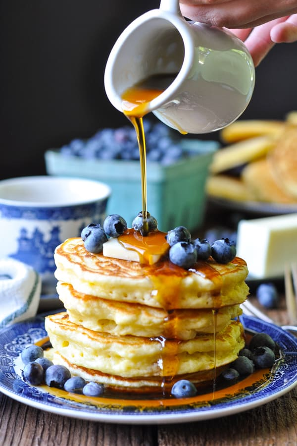

Pancakes- the Holy Grail of Breakfast
fluffy or crepe-like, sweet or savory, pancakes are the perfect breakfast food

Tools
- 2 mixing bowls
- whisk
- ladle or cup measure
- griddle or large frying pan
Ingredients
wet ingredients
- 8 oz. milk
- 2 eggs
- 1/2 stick melted butter
- 1 tsp vanilla
- extra butter for cooking
dry ingredients
- 8 oz flour (1 1/3-1 1/2 cups)
- 2 tbsp sugar
- 2 tsp baking powder
- 1 tsp salt
Directions
- Combine wet ingredients in a bowl, whisk until thoroughly mixed
- Combine dry ingredients
- Mix wet and dry ingredients just enough to combine. Add 1-2 oz milk if you like thinner pancakes
- Prepare frying pan or griddle by setting it over medium heat, greasing pan with oil, bacon fat, or butter
- When pan is hot enough that the fat sizzles, dollop batter in ~1/4 cup drops, cook until fluffy
- store cooked pancakes in a warming tray until batch is finished, then serve and enjoy!
makes about 8 pancakes/4 servings